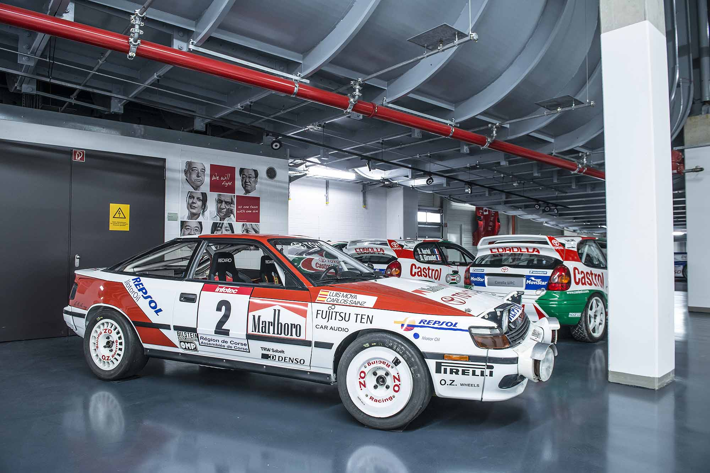

The Toyota Celica /ˈsɛlᵻkə/ is a sports car produced by the Japanese company Toyota from 1970 to 2006.
The Celica name was ultimately derived from the Latin word coelica meaning "heavenly" or "celestial"
Throughout the 1980's the Toyota Celica had a total of four generations, including generations continued into the 80's
from the 70's and years that continued into the 90's from the 80's. This is one of Toyota's most revamped cars since the start of it's
production in 1970. It has become an icon of Toyota as one of it's best rally cars as well as economical performance.

The Toyota Supra is a sports car/grand tourer that was produced by Toyota Motor Corporation from 1978 to 2002.
The styling of the Toyota Supra was derived from the Toyota Celica, but it was both longer and wider. The car spanned
four generations. In 1982, the second generation, Known as the MK2 Supra was designed. As a higher sportier yet luxurious
brand of the Celica, it came in two types (the L and P types). One legendary characteristic is the Celica Supra contained (at
the time considered powerful) a 145hp 2.8 liter Inline-6. This generation continued until mid 1986 where the Mark 3 was introduced.
The third generation Supra was introduced in May 1986 as a free standing model, officially separating it from the Celica.
Whereas the Celica became a front-wheel-drive sport coupe,the Supra retained its image as a rear-wheel-drive sports/GT car.
The new Supra would continue to move upscale and become a showcase for Toyota technology. The all new Supra had options that
weren't available even in the highest class of cars during the 80's. This included Climate Control, 8-Way Adjustable Electric Seats,
Anti-Lock braking systems, and Toyota Electronic Modulated Suspension. The car also contained a
Turbocharged 3.0 Liter Inline-6 known as the 7M-GTE. It was also Toyota's first distributorless engine in
the United States when it first debuted. It soon became Toyota's flagship car meaning that was the best to offer. In the 1989 year, it underwent changes to the exterior as well
as the interior and received drivers airbag's. A new more refined engine was also introduced called the 1JZ-GTE. This engine,
although a bit smaller in size increased the power output from 232hp with the 7M-GTE to 280hp. This sparked the MK4
generation which used a 2JZ-GTE engine and is well known throughout the car community and enthusiasts.